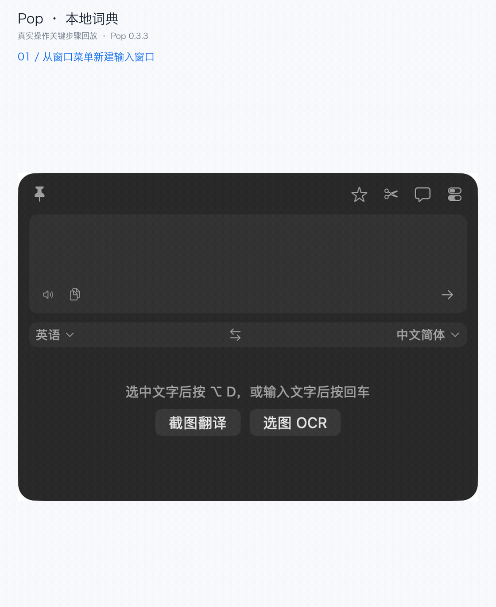
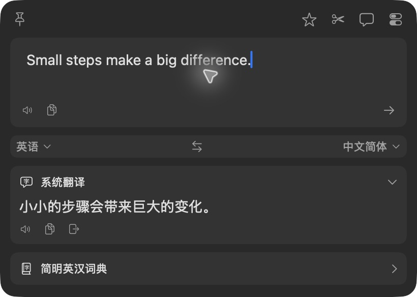
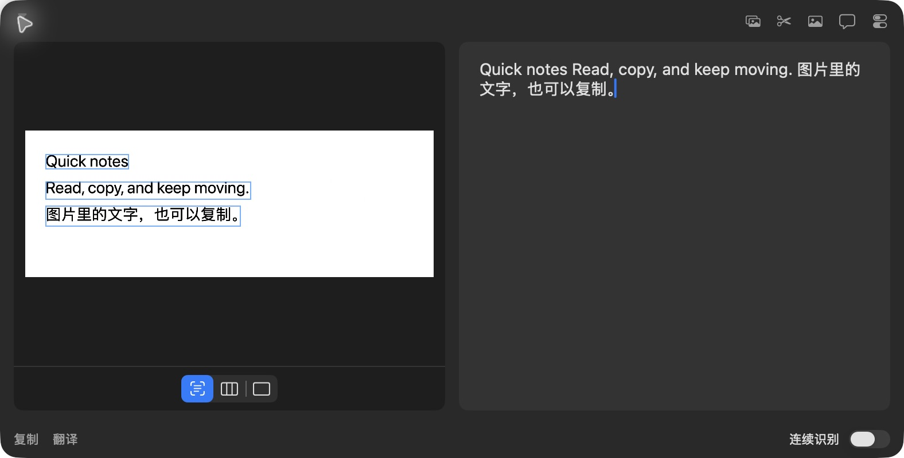
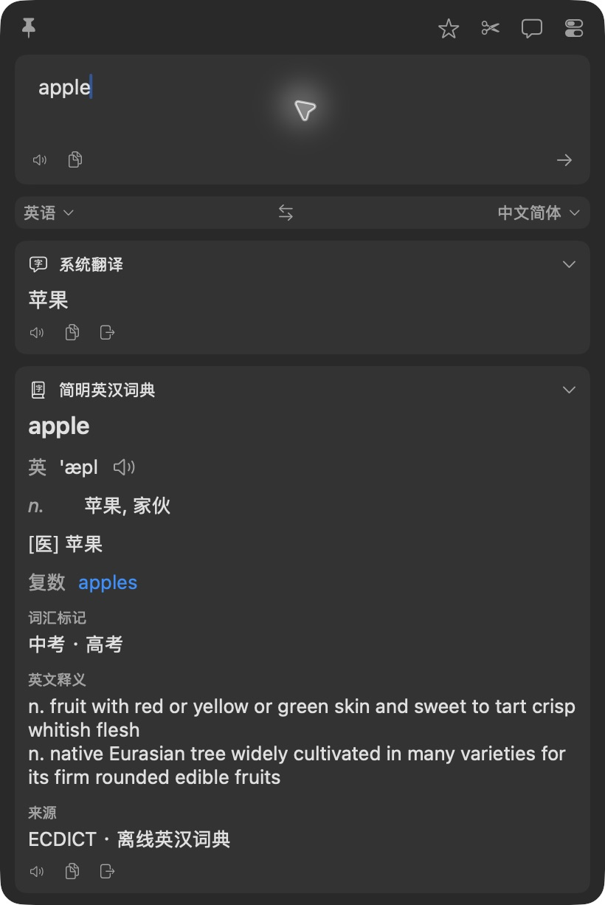

01 / 阅读翻译
看到不懂的句子，带进 Pop 翻译。
输入或粘贴原文，查看 Apple 系统翻译结果，再复制到需要的地方。默认划词快捷键为 ⌥D，用于从其他应用取词。
本次截图使用手动输入入口，无个人云 API Key。跨应用划词需辅助功能权限，本轮尚未完成实录。
随手取词 · 看图识字 · 本地查词
在不同应用中快速取词、翻译和识别图片文字，支持本地词典及自定义 AI 服务。


macOS 15+Apple Silicon / Intel最新稳定版
当前发布包没有 Apple Developer ID 签名或公证。首次打开可能需要系统确认。查看安装步骤
三个日常场景
留在正在阅读的内容附近，完成翻译、识别与查词。
输入或粘贴原文，查看 Apple 系统翻译结果，再复制到需要的地方。默认划词快捷键为 ⌥D，用于从其他应用取词。
本次截图使用手动输入入口，无个人云 API Key。跨应用划词需辅助功能权限，本轮尚未完成实录。
选择一张已有图片，Vision 在本机识别文字，结果可编辑、复制。截图 OCR 的默认快捷键为 ⌥⇧S。
本次展示选图 OCR，无需录屏权限。屏幕框选需要录屏权限，本轮尚未完成实录。

从菜单打开输入窗口，输入英文单词并按回车。随包 ECDICT 英汉词典提供本地释义，结果可以复制。输入翻译的默认快捷键为 ⌥A。
本次从窗口菜单进入并完成复制粘贴。词库随包提供，可离线查英文词条，不承担整句翻译。

本轮素材使用输入 / 选图入口；跨应用划词与屏幕框选录制尚待授权验证。查看实测范围与环境。快捷键可在设置中修改；如与其他应用冲突，请更换组合。
从内置能力开始
内置能力不需要 Pop 账户或个人云 API Key。云服务与本地模型按需配置。
| 能力 | 开始使用 | 运行方式与限制 |
|---|---|---|
| Apple 系统翻译 | 无需 API 配置 | 普通窗口翻译支持 macOS 15+。首次使用某个语言对可能需要联网下载 Apple 语言包；不能统称为完全离线。 |
| Vision OCR | 无需 API 配置 | 在本机识别图片文字。截取屏幕需录屏权限；直接选取已有图片无需录屏权限。 |
| ECDICT 英汉词典 | 无需额外下载 | 词库随包提供，可离线查英文词条。不是整句翻译服务。 |
| 自定义云 API | 需要自行配置 | 按服务填写地址、模型与密钥。支持 OpenAI 兼容接口及 Gemini、Claude 等原生协议；查询发往所启用的服务，费用由服务商决定。 |
| 本地模型 | 需要自行配置 | 自行安装并运行 Ollama 等服务、下载模型，再配置地址与模型名称。Pop 安装包不包含大模型。 |
第一次使用
无需编译。只想先体验时，可以从手动输入和本地词典开始。
下载最新 DMG，打开后把 Pop.app 拖到 Applications（应用程序）。ZIP 用户解压后，同样把应用移入应用程序。
当前发布包使用 ad hoc 签名，没有 Apple Developer ID 签名或公证。若系统拦截，先尝试打开一次，再到「系统设置 → 隐私与安全性」选择 仍要打开。无需关闭系统安全保护。
录屏与系统录音（或「屏幕录制」）用于截取屏幕；辅助功能用于跨应用取词和回填。按系统要求重新打开应用。拒绝这些权限后，仍可手动输入、查本地词典、选取已有图片做 OCR。
按 ⌥A，输入 apple 并按回车，查看「简明英汉词典」结果，点击复制按钮并粘贴到文稿。若此前关闭过此服务，先在翻译服务设置中启用它。
更新前请先退出旧版 Pop，再替换应用。签名变化后，系统可能要求重新授予权限。安装包支持 Apple Silicon 与 Intel；Windows、Linux 和 macOS 14 及更早版本不支持。
先体验内置词典与 OCR，再按需要配置自己的翻译服务。
下载最新 Pop